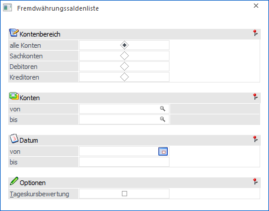
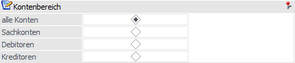
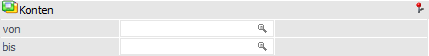
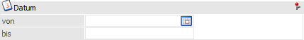
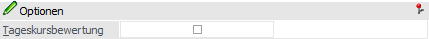
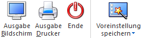

Die Fremdwährungssaldenliste, welche über den Menüpunkt…
1 WinLine FIBU
1 Auswertungen
1 Fremdwährungssaldenliste
… aufgerufen werden kann, ist die Aufstellung der Konten mit den Kontenumsatzdaten in Fremdwährung der laufenden Periode, den kumulierten Werten und des Saldos.

Folgende Einstellungen und Selektionskriterien stehen in diesem Register zur Verfügung:
Kontenbereich

Ø Kontenbereich
An dieser Stelle kann der grundsätzliche Kontenbereich der Auswertung definiert werden.
ü alle Konten
Alle Konten der
festgelegten Auswahl von Konto bis Konto werden ausgegeben.
ü Sachkonten (ohne
Deb./Kred.-Summe)
Es werden nur die Sachkonten angedruckt. Debitoren bzw.
Kreditoren werden nicht berücksichtigt, auch wenn sie in den selektierten
Kontenbereich fallen.
ü Debitoren
Es werden nur
Debitorenkonten ausgewertet.
ü Kreditoren
Es werden nur
Kreditorenkonten ausgewertet.
Konten

Ø Konto von / bis
An dieser Stelle kann eine Einschränkung der Ausgabe durch die Angabe von Kontengrenzen erfolgen. Werden die Felder leer gelassen, so bewirkt dieses die Ausgabe aller Konten.
Datum

Ø Datum von / bis
Hier kann eine Datumseinschränkung auf Grundlage des Buchungsdatums erfolgen.
Optionen

Ø Tageskursbewertung
Durch Aktivieren der Option "Tageskursbewertung" wird bei der Ausgabe auch die Kursabweichung zum aktuellen Tageskurs berechnet und ausgewiesen.
Buttons

Ø Ausgabe Bildschirm
Mit Hilfe des Buttons "Ausgabe Bildschirm" oder der Taste F5 wird die Auswertung am Bildschirm ausgegeben.
Ø Ausgabe Drucker
Durch Anwahl des Buttons "Ausgabe Drucker" wird die Auswertung am Drucker ausgegeben.
Ø Ende
Durch Drücken der ESC-Taste wird das Fenster geschlossen, es wird keine Auswertung ausgegeben.
Ø Voreinstellung speichern
Durch Anwahl dieses Buttons erfolgt eine benutzerspezifische Speicherung aller im Fenster getätigten Einstellungen. Diese sogenannten "Voreinstellungen" können jederzeit wieder abgerufen werden und ermöglichen dadurch ein schnelleres und zielorientierteres Arbeiten (nähere Informationen entnehmen Sie bitte dem Kapitel "Die Voreinstellungen").